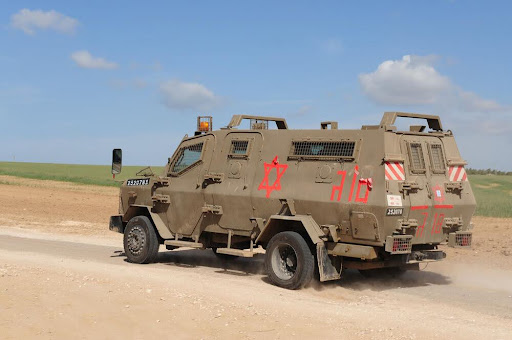
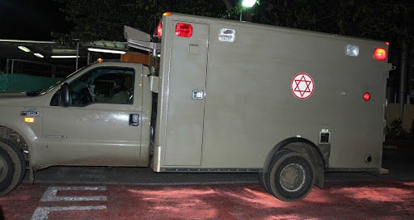
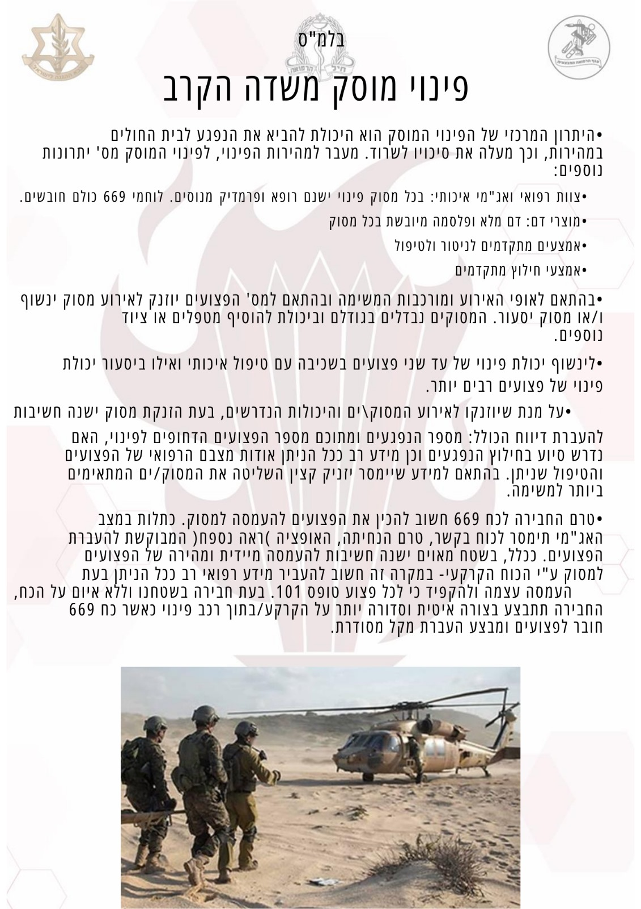

3.
ברה"צ- תברואת מזון ובעלי חיים - דגשים לטיפול באירוע מסוג זה.
כוננות למתן מענה רפואי:
1. פיזור סד"כ רפואה במוצבים –
אמצע וסוף שבוע.
2.
מענה רפואי לסיורים וצוותי כוננות.
3.
מענה לפעילות מבצעית.
4.
חבירה ומענה רפואי לכוחות קטנים
במרחב.
5.
מיקום התאג"ד, תגבור צירים, סבב
מוצבים.
6.
שבצ"ק פיזור מטפלים בכירים וחובשים למול משימות ברזל באמצע ובסוף השבוע.
בדיקת כוננות
בדיקת כוננות יומיות
בדיקת כוננות שבועיות
שמירת כשירות המטפלים במהלך התעסוקה
תכנון אימונים במהלך התעסוקה.
מניעת פציעות
מניעת פציעות היא הרפואה הטובה ביותר
הרפואה הטובה ביותר היא רפואה מונעת. לכך יושם דגש על מיגון עצמי ווידוא מיגון הלוחמים:
משקפי מגן
מיגון קרמי/שכפ"צ
קסדה אישית וקסדת הפס"ד
הדגשת השוני בהנחיות הגזרתיות והחשיבות
בחבירה לכוחות הגזרתיים לדיוק המיגון.
עצירת דימומים
מוות בר מניעה נגרם בראש ובראשונה מדימום.
האמצעים העומדים לרשות האוכלוסיות השונות:
מח"צ
חובש
מט"ב
המרות
עצירת דימום הינה פעולה כואבת וחשוב לתת שיכוך
כאב לפצועים בהכרה ושאינם בהלם עמוק לאחר עצירת דימום.
דגש!
כשירות לטיפול של כלל הלוחמים:
1) מיקום ה-CAT וה- FC בווסט – זהה בין הלוחמים כדי לאפשר גישה מהירה בעת צורך.
2) אופן אפסון (אריזה סגורה ושלמה).
החזר נפח
המט"ב צריך לקחת חלק פעיל בהחזרת הנפח – השגת גישה למחזור הדם, וידוא הכנת פלזמה
וכו', ולא רק בהחלטה על הצורך בו.
אינדיקציות עדכניות להחזר נפח.
סדר העדיפות במתן נפח הוא:
דם מלא > פלזמה מיובשת > הרטמן.
חובה לקחת מדדים מלאים לפני החלטה על החזר נפח.
אין לתת הרטמן ל"שמירה על וריד פתוח", האינדיקציה להרטמן היא הלם עמוק בהיעדר מוצרי דם.
הקסקפרון יינתן לפצועים בהלם או פגיעות חודרות בראש/גו, רק כ- 1 גר' IV או IO, תוך 3 שעות
מהפציעה, כמה שיותר מוקדם.
סמכויות מתן דם מלא (גזרות רלוונטיות) – רק בטנ"צ, ע"י פרמדיק שקיבל הסמכה ובאישור טלפוני
של קרפ"א/מר"פ.
גישה וסקולרית- דגש על חשיבות גישה וסקולרית מהירה ויעילה- IO כעדיפות בפצוע בהלם עמוק.
מט"ב שותף פעיל בהשגת הגישה בפצוע בהלם (כמטפל המנוסה ביותר).
יש להחזיר נפח דרך מכשיר QinFlow במידת האפשר.
הכנת פלסמה.
ביצוע פרוצדורות
רוב הפצועים שדורשים טיפול בשטח זקוקים לעצירת דימומים חיצוניים, החזר נפח
ופינוי מהיר. פרוצדורות אחרות הרבה פעמים אינן נחוצות, עלולות להסתבך, להחמיר את מצב הפצוע ו/או
לעכב פינוי.
התוויות לנתיב אוויר דפיניטיבי.
התוויות לניקוז חזה.
פרוטוקול אובדן סימני חיים.
הימנעות מקביעת מוות בשטח, יוצרת פינויים מיותרים תוך סיכון צוותים ועומס על המערכת.
טיפול בכאב
רוב הפצועים קיבלו טיפול טוב לכאב, לרב באמצעות אקטיק. יש להמשיך ולחדד את חשיבות מתן הטיפול
בכאב ולהמשיך לעודד שימוש באנלגטיקה בפצועים המתאימים, הן ברמת החובש והן ברמת המט"ב.
פרוטוקול הטיפול בכאב.
פינוי
ברירת המחדל היא שכל פצוע יפונה בדחיפות, באמבולנס, ועם מטפל בכיר.
הכנה של הפצוע לפינוי – השלמת הפשטה, סריקה מלאה, כיסוי וחימום, קיבוע לאלונקה וחפיסה.
כלי הפינוי הזמינים בגזרות.
חבירה למסוק.
בעת אירוע רפואי- הקפצת מסוק ולא קיצור.
חבירה בין צוותים מטפלים- אופן העברת הפצוע.
נהלי חבירה למד"א
החלטה על פינוי לא דחוף- אבחנה שבשלילה.
דגשים לפציעות מיוחדות: הדף, רסיסים, שריפה.
ניטור ותיעוד
הדגשת חשיבות התיעוד וההשלכות על תיעוד לא נכון.
בכל צוות יש להגדיר בעל תפקיד שאחראי על הניטור והתיעוד.
יש לנטר את הפצוע מבחינת הכרה, ל"ד, דופק, סטורציה, נשימות, וכאב במהלך ביצוע הסכמה ולאחר
מכן כל 15 דקות לכל הפחות.
יש לתעד בטופס 101 בדגש על הפציעות, התרופות, והפרוצדורות.
את התיעוד יש להקפיד להעביר לצוות המטפל הבא, בין אם מדובר בשיחלוף ובין אם בבית החולים.
תיעוד במערכת המנפ"צ- הנחיות והסברים לעבודה במערכת.
שימוש ב- 101 דיגיטלי.
פיקוד ושליטה
פיקוד מלפנים- אחריות קצין הרפואה.
האזנה לפודקסט בנושא פיקוד וניהול הקרפ"ג באירוע רפואי.
נוהל קרב לפעילות מבצעית- דגשים בהכנת מרשם רפואה, נוהל קרב, תרגולות לפני פעילות.
זירת אר"ן- הגדרת המפקד הרפואי ואחריותו.
חשיבות הכרזת אר"ן וההתוויות לכך.
מיקום המפקד ברכב הפינוי- הקרפ"ג, בהעידרו החוג״ד, בדרך לאירוע לעולם מקדימה בסמוך לנהג,
לשליטה העברת דיווחים וניווט.
בהינתן אירוע צבאי - לקיחת אחריות על זירה צבאית מגורמים אזרחיים.
קבלת החלטות ודיווח לרמה ממונה.
בריאות הנפש
שמירה על כשירות הצוותים הלוחמים והמטפלים.
דגשים בנוגע להכנות מנטאליות למפקדים לקראת לחימה.
תרגול מגן ללוחם.
הסבר על חשיבות שיחות משאבים לאחר אירוע.
לקחי חרבות ברזל
סירטון Top6 מלקחי מלחמת חרבות ברזל.
קצין הרפואה הגדודי הוא האחראי לרפואה בגזרתו.
הערכות מקדימה היא מפתח להצלחה בתעסוקה.
יש יכולת מועטה להשפיע על כשירות היחידה לתעסוקה לאחר שזו כבר החלה.
ניצול האל"ת/אל"ל הינו הזדמנות להעלאת כשירות לתעסוקה במלחמה וליישור קו יחידתי בנושאי
הליבה.
הפו"ש הרפואי באירוע הוא נדבך הכרחי ומשמעותי בהצלחת הטיפול הרפואי.
השיח המקדים ויצירת השפה המשותפת לכל ההיבטים למול גורמי הרפואה בחטיבה הינו משמעותי ויסייע
בעת האירוע.
דגשים!
1. יש לוודא כי קיים ציוד תירגול מספק עבור כל דרג בנפרד.
2. את תכני האימון נדרש לתאם למול נציג הרפואה בבסיס האימונים הפיקודי הרלוונטי, ציוד רפואי הינו באחריות
יחידה אורגנית בסדיר ובמילואים.
אימון רענון למצילי חיים
יש לוודא כי הריענון מקבל ביטוי בלו"ז האימון הפלוגתי/גדודי ומועבר על ידי מדריכים המוכשרים לכך.
ריענון מקצועי לחובשים
בניית תוכנית אימון מותאמת לדרג החובשים המחלקתיים והפלוגתיים.
אימון צוות רפואה
נוכחות כלל בעלי התפקידים, השפעה על תכני האימונים בתכנון המקדים, מיקוד בעבודת צוות ובניית אורגניות.
הינן עדות קלינית לחסימת דרכי אוויר או חוסר יכולת לחמצן
פצוע (סטורציה < 88%), לאחר מיצוי כלל האופציות השמרניות לפתיחת נתיב אוויר והנשמה לא פולשנית. כאשר
קיים איום על נתיב האוויר (impending airway obstruction), כמו במקרה של כוויות בדרכי הנשימה או הרס
אנטומי, נדרש לנטר את הפצוע בקפידה ולהתערב במקרה של התדרדרות למרות אמצעיים שמרניים.
חשד לפציעה בבית החזה, בנוסף להלם עמוק, שלא מגיב לניקור
במחט ומתן נפח, וכן חשד לפגיעת חזה עם סטורציה
הנמוכה מ- 85% למרות שימוש בחמצן.
הלם דימומי, פגיעת ראש בפני עצמה (גם אם ה- GCS ירוד) או
פגיעת חזה – אינן מהווים התוויה לנתיב אוויר
דפיניטיבי.
הושעה למהלך המלחמה
מתוך הבנה כי סיכוי ההצלה של הפצוע שמאבד סימני חיים הוא
מזערי מחד, אולם מאידך מאריך את הטיפול בנפגע
ועלול לסכן את הצוות הרפואי במתאר מאוים, וכן מבזבז אמצעים ומוצרים שנמצאים בשטח בכמות קטנה (פרוצדורות,
פלזמה, דם) ועשויים להציל חיי פצוע בר הצלה.
חודד פרוטוקול הטיפול בכאב לפצוע עם כאב בלתי נסבל הכולל
אקטיק כקו ראשון ובמידה ואינו מגיב לאקטיק, או
שיש לו גישה למחזור הדם בשלב מוקדם בטיפול, תרופת הבחירה היא קטמין במינון אנלגטי (25 מ"ג). מורפין הינו
קו שני במקרה שטיפול באקטיק ו/או קטמין אינו נותן הקלה מספקת.
2.יבצע ריענון אחת לחציון - הנחת ח"ע CAT על גדם- על גפה חשופה ולא על מדים/בגד
לפני תעסוקה מבצעית (במסגרת אל"ת/אל"ל)
חובש/לור"מ
1. אימון חו"פ אחת לחציון + אימון מס"ר 1 לשנה
2. 1 לחודש הנחת ח"ע CAT על גבי גדם כאשר בכל תירגול יבצע החובש 3 הנחות
1. אימון חו"פ באל"ת/אל"ל
2. הנחת ח"ע CAT בכל שמ"פ
מטפל בכיר
פראמדיק - 4 משמרות כשירות בחודש
רופא - 25 ימי כשירות בשנה בבתי חולים על פי הגדרת ענף רפמ"צ
פראמדיק - ביצוע 4 משמרות מד"א ב-3 שנים האחרונות.
דגש!
את האימונים במהלך התעסוקה נדרש לתאם מול הרפואה המרחבית.
זאב - כלי\רכב ממוגן

פורדבולנס

ספרינטר
דגשים להכנה לפינוי, אופציות חבירה והנחתה

מתן מענה ראשוני לתגובת דחק
במהלך הלחימה, בוצעה סכמת יהלו"ם בנפגעי תגובת קרב בצורה טובה, דבר המאפשר את רציפות הלחימה והקל על
מצב הפצועים תוך צמצום סיכוי להתפתחות PTSD - יש להדגיש את חשיבות סכמת היהלו"ם, לתרגל את הסכמה בכל
טיפול בנפגע חרדה ולוודא את הבנת חשיבותה.
 מיד מתחילים...
מיד מתחילים...